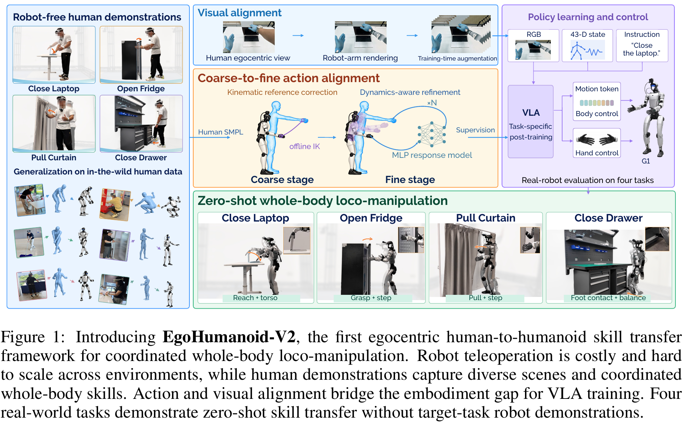
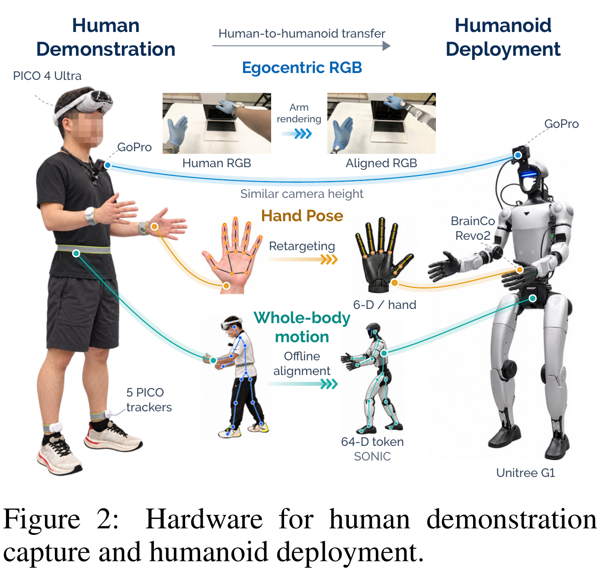
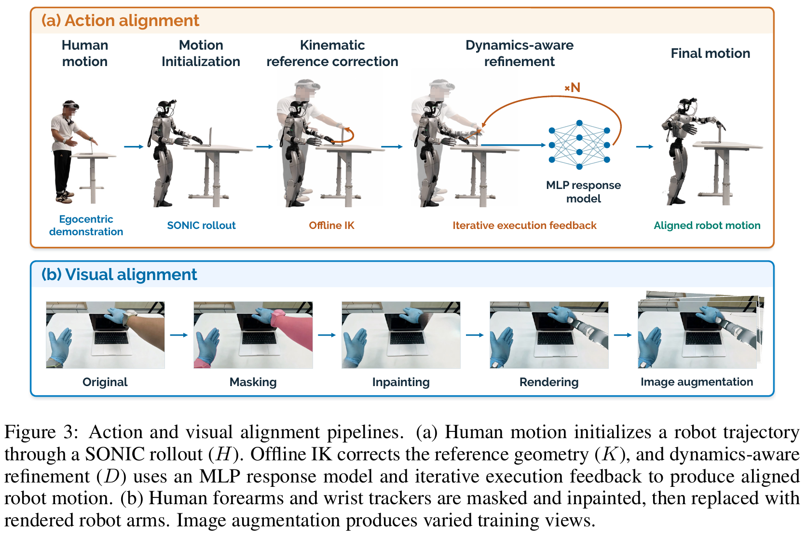
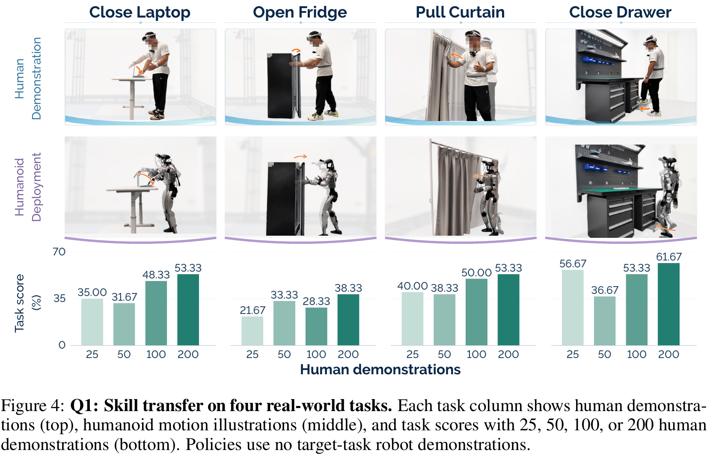
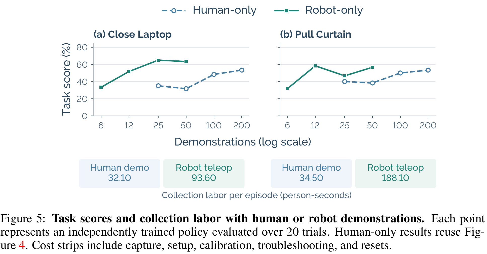
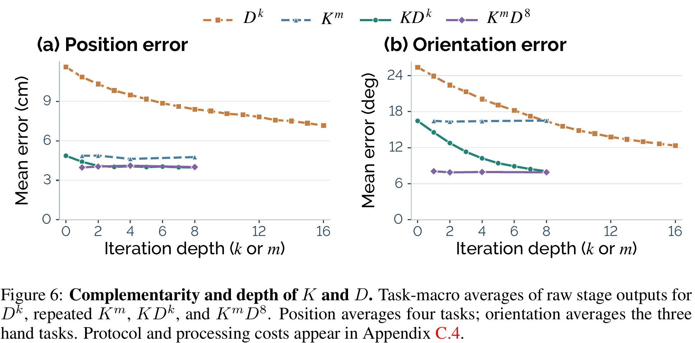
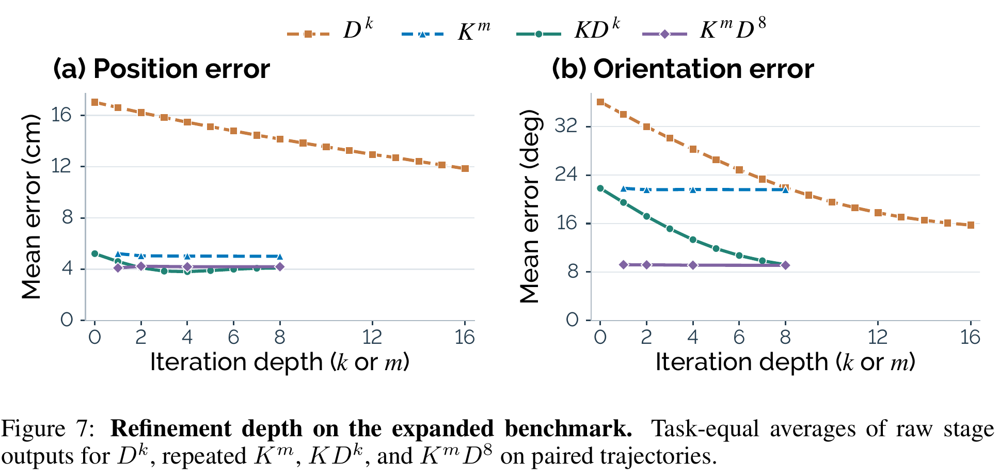
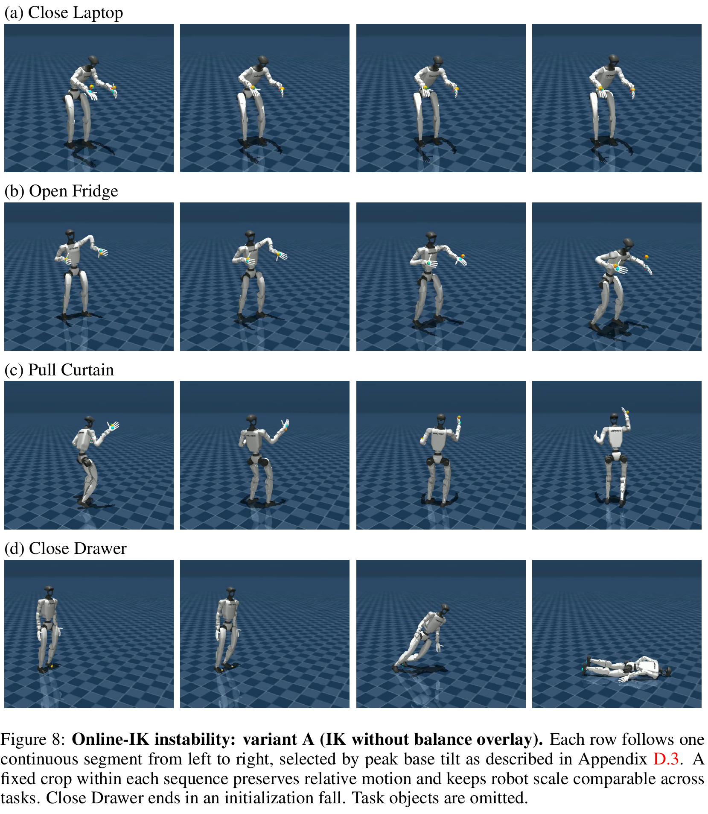
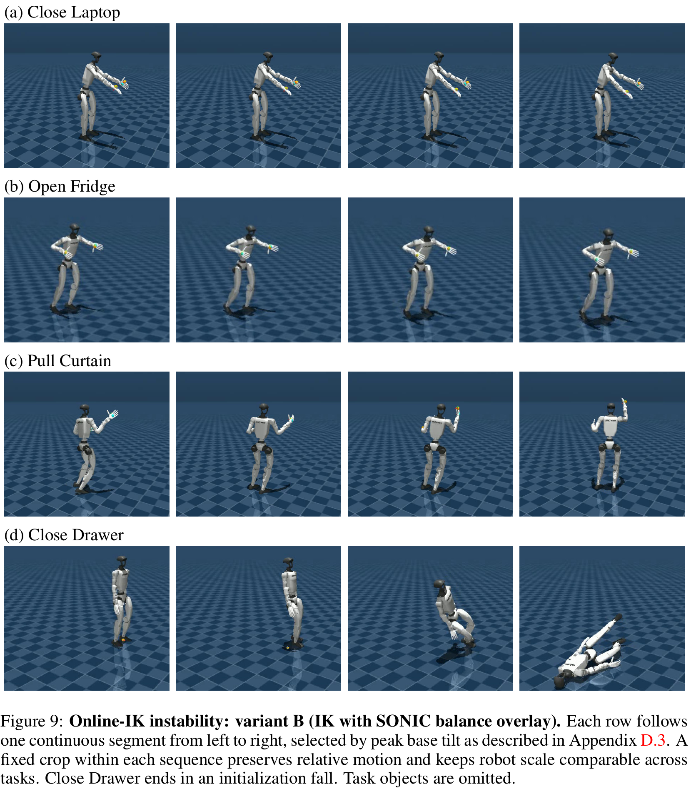
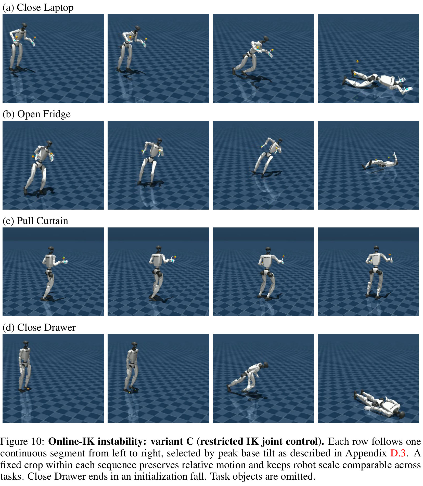

仿真对齐诊断
四任务均值：位置误差 11.21 → 4.45 → 3.41 cm；手朝向 21.22° → 13.77° → 6.71°。不是仿真闭环任务成功率。
不在运行时用 IK 覆盖 SONIC 的部分关节命令，而是离线修正参考，再沿冻结控制解码器优化 motion token。真实仿真 rollout 检查每轮修正是否真的改善执行；VLA 学的是经过筛选的状态—动作配对。
固定版本论文 · 论文给出的项目地址 · 本地 PDF 哈希。本页通读全文和内嵌附录；未把网页演示视频当作额外成功率证据。
2026-10-23 修订：补齐此前缺失的 Figure 1、2、4–10，并将 Figure 3 从“配图”改为逐步解读。下面的原图均从同一份 24 页 PDF 以 300–500 DPI 裁出；点击图片可打开原尺寸。必要解释直接显示，不依赖交互或折叠。
先把“人采数据”“离线制标签”“机器人执行”分开，再看每一块。图里同一条箭头可能表示训练样本流、监督信号或执行命令；不能把它们都理解成运行时的网络层连接。

| 图中区域 | 具体在做什么 | 该怎样理解箭头 |
|---|---|---|
| 左侧 Robot-free human demonstrations | 人完成关电脑、开冰箱、拉窗帘、脚关抽屉；同步记录 RGB、身体运动和手姿。Robot-free 指目标任务示范采集不需要机器人。 | RGB 走上方视觉分支；Human SMPL / 全身运动走下方动作分支，不是从一张 RGB 直接恢复全部控制命令。 |
| 上方 Visual alignment | 保留真实环境与物体画面，去掉人前臂与腕部 tracker，再合成机器人手臂；训练时做图像增强。 | 输出适配后的图像 Ĩ，作为 VLA 的观测。部署时不用再次对机器人画面做人臂擦除。 |
| 中间 Coarse stage | 先用 SONIC 得到初始机器人运动，再用离线 IK 修正参考几何，让手或足更接近固定人体目标。 | 这里输出的是更好的参考与编码后的 motion token，不是在真机执行时把 IK 结果覆盖到电机上。 |
| 中间 Fine stage 与 ×N | 根据仿真实际执行误差，利用局部 MLP 响应模型优化 token；每轮重新 rollout 检查，最后选出通过验证的候选。 | 循环属于离线数据处理。图中 Supervision 指对齐后的动作标签；同次 replay 还提供机器人 state。 |
| 右侧 RGB + 43-D state + Instruction → VLA | 以适配图像、机器人状态、任务指令为输入，对 π₀.₅ 做任务专用后训练；每个任务是一套独立策略。 | 训练时用对齐数据；部署时换成机器人实时 RGB 与自身状态。不是把人体 state 当作机器人 state。 |
| 右侧 Body / Hand control | VLA 输出 64 维 SONIC token 和两只手各 6 维命令；SONIC 负责身体，Revo2 driver 负责手。 | 这才是在线控制通道。MLP 响应模型与离线 IK 不在这条部署通道里。 |
下方四列在展示什么协调？关电脑是伸手与躯干配合；开冰箱是维持手接触与姿态/步伐配合；拉窗帘是持续抓握与拉动、身体位移配合；脚关抽屉是单脚交互与身体平衡配合。它们是任务能力示意，成功程度要看 Figure 4 的三阶段得分。
主干图的关键汇合点是一个训练样本：适配后的图像 ＋ replay 的机器人状态 ＋ 指令 → 对齐的身体 token 与手命令。视觉与动作分支必须对应同一时刻，不能各自“看起来合理”就拼在一起。
来源：Figure 1，§3.1–3.4，Eq.1–2；Appendix A.1、A.4、B.1–B.4。
“机器人应该看到什么”和“人刚才怎么动”是不同监督。GoPro 提供前者；PICO 系统提供身体与手部运动。右边的机器人则使用自己的相机和自身状态，不需要真人继续穿设备遥操作。

| 图中设备 / 通道 | 人体采集侧 | 离线处理 | 机器人部署侧 |
|---|---|---|---|
| 蓝线 · Egocentric RGB | 颈部 GoPro 拍人视角环境、物体与手臂画面。 | 原 Human RGB → 人臂遮罩与补全 → 机器人臂合成，得到 Aligned RGB；训练时增强。 | 头部 GoPro 拍真实机器人当前画面，标准预处理后输入 VLA。 |
| 橙线 · Hand Pose | PICO 系统采手姿；论文没有逐项公开头显与各 tracker 的融合算法。 | Retargeting 把人体手姿映射成机器手可执行命令。 | BrainCo Revo2 每手 6 维控制。6-D / hand 指手部命令维数，不是手掌的 6D 空间位姿。 |
| 青线 · Whole-body motion | PICO 4 Ultra ＋图示 5 个 PICO trackers 采全身运动。 | H 初始化、K 修参考、D 修执行，产出 64 维 motion token；同次 rollout 提供 robot state。 | SONIC 将 token 与低层自身反馈结合，生成 G1 身体控制；VLA 高层观测另含 43 维状态。 |
因为这里训练的是视觉条件策略：同一个伸手动作，面对不同位置的冰箱把手或电脑盖，应该产生不同控制。只有身体、手姿序列，没有对应场景图像，就缺了输入 oₜ 中的 Ĩₜ。反过来，只有 RGB 也缺少本文用来生成精确动作监督的身体与手部信号。这是根据 Eq.1 对数据接口的解释，不是额外硬件消融。
论文明确说两侧相机放在近似高度以缩小视角差，而不是要求安装部位名称一致。训练时仍会看到人身体运动造成的视角变化，部署时则是机器人头部运动；高度近似并不使每一帧的相机位姿、内参或运动轨迹完全相同，因此还要做外观适配与训练增强。Figure 3 解释具体处理。
Appendix A.1 写的是把 GoPro RGB、PICO 全身和手部信号配成 50 Hz 图像—轨迹数据，并检查时间戳一致性与帧数匹配。作者同时说明没有外部同步脉冲，因此这些检查衡量重复性，不是绝对同步误差的测量。不能把“50 Hz 配对”直接读成硬件级零时差，也不能推断原始相机的所有采集参数。
GoPro 解决“看见什么”，PICO 解决“人怎么动”，SONIC 解决“机器人怎么稳当地执行”。GoPro 不是额外的动作捕捉器，也不需要在部署时继续观察真人。
来源：Figure 2、§3.2 p.3、Eq.1 p.4、§3.4 p.5、Appendix A.1 p.14 与 B.1 p.16。
GMR 改善运动学参考，SONIC 将参考变成动态可执行的控制。但在操作物体时，几厘米的手端偏差可能决定能否插入门缝。这里要解决的是控制器执行后的残差，不只是参考姿态误差。
全身控制像一组相互补偿的动作：手向前伸时，腰和腿可能已经在为平衡配合。如果在线把手臂替换成另一套 IK 命令，剩下的 SONIC 输出不会自动知道这次替换。本论文在它测试的实现中观察到不稳定，因此选择在离线数据阶段做修正。
| 问题 | 回答 |
|---|---|
| 背景 | 已有 ego-to-robot 转移偏向解耦上肢/导航；目标是转移手、腰、腿协同技能。 |
| 直接依赖 | EgoHumanoid 采集接口、SONIC 全身 tracker/encoder、π₀.₅、离线 IK、机器人手臂渲染。 |
| 失败场景 | 追踪人体参考存在手/足末端偏差；在线覆盖关节虽可提高局部精度，却会扰乱协调。 |
| 核心押注 | 先改善参考，再学习“命令变化如何变成实际末端变化”的局部响应，用仿真闭环检验。 |
| 效果与代价 | 真机任务均分 21.25→47.08→51.67%；离线多轮优化很慢，且仍需选优与验收。 |
“Gradients pass through the fixed response model and control decoder, not the simulator.”
知道系统为什么需要修正后，要先确定修正的对象。29 维身体关节、43 维高层观测、64 维 token 处在不同接口层；把它们当成同一个 state 会使数据标签错位。
| 阶段 | 输入 / 输出 | 来源与约束 |
|---|---|---|
| 人体采集 | 颈部 GoPro RGB + PICO 身体/手部信号；50 Hz 配对 | 机器人与人体相机初始高度近似；无外部脉冲，时间一致性检查只能说明重复性，不能等同绝对同步误差。 |
| 运动初始化 H | 人体动作 → 仿真 SONIC rollout → b⁰∈Rᵀˣ²⁹ 与初始 token | 不是把 SMPL 关节角直接当 G1 电机命令。 |
| 高层观测 | oₜ=(Ĩₜ,qₜ,ℓ)，qₜ∈R⁴³ | 来自 controller rollout；本版未逐维列出 43-D schema，不能猜成 KODA 的 44-D。 |
| 高层动作 | aₜ=(zₜ,hᴸₜ,hᴿₜ)∈R⁷⁶ = 64+6+6 | SONIC 执行身体 token；两只 Revo2 分别接收 6 维手命令。 |
| 策略训练 | 每任务独立 π₀.₅；pi05_base，30k steps，batch 256 | 25/50/100/200 人类示范预算；相同 SONIC checkpoint 用于所有任务的对齐与部署。 |
| 响应模型预训练 | BONES-SEED：250 motions / 68 dates，345,080 frame–perturbation pairs | 验证 13 motions / 7 个不同日期，20,420 pairs；不是四个目标任务的机器人示范。 |
有了正确的输入输出，先用 K 修几何，再用 D 修控制响应。不要把“同一个 IK 多跑几轮”当成 dynamics-aware refinement；后者使用的是新 rollout 的执行误差。

动作分支决定“要教机器人做什么”，视觉分支决定“它看到这种动作时，画面是否像部署环境”。二者不能互相替代；下文的动作消融与视觉消融分别固定另一分支来比较。
来源：Figure 3、§3.3–3.4、Appendix A.4 与 B.1。响应模型的精确输入与梯度路径见下文。
足目标用踝与足关键点中点近似 sole center，再做固定地面校正和相同高度配准；它不是测得的真实接触点。关抽屉只优化足位置，不混入未使用的足朝向指标。
受约束的离线 IK 把初始参考拉向人体末端目标，同时限制偏离原运动与时间突变。手部任务只调整手臂与腰。校正后用机器人 motion encoder 得到 z⁰ = Eᵣ(bʳᵉᶠ)，重新播放，测出仍然存在的执行残差。
解释性算例：手距离目标还差 2 cm。若几何上命令前移 2 cm，但控制器实际只实现 60%，unit response 会只纠正 1.2 cm；局部响应模型会建议约 2/0.6=3.33 cm 的命令级修正。真实问题有耦合、时延和信赖域，不能用这个标量除法代替论文优化。
响应网络是冻结线性响应 + 两层宽 64 的 SiLU MLP residual。24 维干预加五个指数平滑历史成为 144 维，再条件化于 93 维 robot features 和 64 维 token。手任务只以 0.15 权重混合 learned response 与 unit response；足任务使用 learned position response，不能把 MLP 写成所有任务都独占的预测器。
默认一轮 K、七轮常规 D、一轮保守 D，每轮 400 Adam steps。局部优化固定当前 rollout context，梯度穿过冻结网络；随后必须重新仿真，更新 context 和残差。手任务腿/腰/臂保姿权重为 20/20/0.1，足任务为 0.1/20/20，属于软惩罚，不是把非目标身体锁死。
训练数据候选经过误差、执行一致性与稳定性检查，再独立 replay；若后面变差，可能选回 H 或 H+K。验收限制包括 5 cm、15°、骨盆下降 10 cm、base tilt 25°。没有候选通过则拒收 episode。
动作正确但画面仍是人手，部署时就有视觉分布差。本文处理的是手臂外观和视角鲁棒性；它没有完整重建物理场景，也没有把渲染视图等同实拍。
人和机器人都戴蓝色手套以简化对齐。SAM2 去除人体前臂和腕部 PICO tracker，DiffuEraser 补背景；由对齐关节渲染 G1 手臂，再调平移、旋转、统一尺度，与人体手腕/前臂位置对齐后合成。训练时做 random resized crop、小旋转和光度扰动，部署只用机器人相机标准预处理。
| 增强 / 渲染 | 关笔记本 | 开冰箱 | 拉窗帘 | 脚关抽屉 | 解释 |
|---|---|---|---|---|---|
| 无 / 无 | 31.67 | 16.67 | 35.00 | 50.00 | 原人类图像基线 |
| 无 / 有 | 51.67 | 23.33 | 41.67 | 未评 | 三臂任务均值 38.89 |
| 有 / 无 | 61.67 | 33.33 | 33.33 | 61.67 | 笔记本这项最高，不是组合总赢 |
| 有 / 有 | 53.33 | 38.33 | 53.33 | 未评 | 三臂任务均值 48.33，不能和四任务均值硬比 |
K 与 D 的几何和执行收益最终要通过真实操作验证。先读 Figure 4–5 的示范数量与采集成本，再核对仿真、泛化和真机三张证据表，最后用 Figure 6–10 检查迭代收益与在线 IK 的失败边界。

读轴：四列分别是四个任务；每列横轴是用于后训练的人体示范条数，纵轴是三阶段平均 task score。每根柱对应独立训练的策略及 20 次真机尝试，不是一条策略逐步收集数据后的在线学习曲线。默认使用完整动作对齐与视觉处理，脚关抽屉不做手臂渲染。
| 任务 | 25 条 | 50 条 | 100 条 | 200 条 |
|---|---|---|---|---|
| 关笔记本 | 35.00 | 31.67 | 48.33 | 53.33 |
| 开冰箱 | 21.67 | 33.33 | 28.33 | 38.33 |
| 拉窗帘 | 40.00 | 38.33 | 50.00 | 53.33 |
| 脚关抽屉 | 56.67 | 36.67 | 53.33 | 61.67 |
支持什么：25 → 200 条时四任务均分从 38.33 提高到 51.67，支持增加人体示范有助于这四项技能迁移。没有支持什么：每个任务的曲线并不单调，尤其抽屉 25 → 50 条有明显下降；没有误差棒或重复训练方差，不能从几个柱子拟合稳定的 scaling law，也不能把 53.33% 读成“20 次中约 11 次完整成功”。
来源：Figure 4、§4.1–4.2；Appendix B.1–B.4。计分公式和各任务完整完成判据见下面真机表。

两个子图：(a) 关笔记本，(b) 拉窗帘。横轴不是采集耗时，也不是训练步数；每个点是独立策略，均评测 20 次。人体点复用了 Figure 4，不是另一批独立重复实验。200 条人体示范两任务均为 53.33 分；50 条机器人示范分别为 63.33 与 56.67 分，所以人体示范仍需要更多 episode 才接近机器人示范的效果。
底部成本条：关笔记本每条人体/机器人示范为 32.10/93.60 person-seconds，窗帘为 34.50/188.10。person-seconds 是所有操作者劳动时间之和，包含设置、标定、排障与重置；人体采集用一人，遥操作用两人，不等于视频时长，也不包含整个离线对齐计算开销。
来源：Figure 5、§4.3 pp.6–7；百分比复算使用文中人力统计，不把 GPU 处理时间混入采集人力。
| 数据 / split | 输入与控制 | 评估次数 / 指标 | H → H+K → H+K+Dₛ | 证据 / 边界 |
|---|---|---|---|---|
| 四任务，每任务固定随机 25 条训练轨迹 | 固定人体目标 + SONIC；50 Hz token replay；轨迹全时域，具体 simulator 版本未报告 | 位置：帧/双端平均再任务等权；朝向不含抽屉；不是 held-out task | 位置 11.21→4.45→3.41 cm；朝向 21.22→13.77→6.71° | Table 1 p.8；Appendix C.1–2 pp.17–18；无标准任务成功率 |
| 扩展：50 tasks / 112 trajectories，独立于四任务 cohort | 相同 K/D pipeline | task-equal endpoint error；是否完全未见于响应/基础预训练未证明 | 位置 17.03→5.22→3.83 cm；朝向 36.06→21.81→10.85° | Table 9 p.20；不是 50 个真机任务 |
| 初始化对照 | SONIC rollout / GMR / HuMI-style IK，再共享 K+8D | 同 25 条/任务；仅 D1–D8 选优 | 位置 3.41 / 3.42 / 3.82 cm；extra yaw 7.18 / 11.45 / 23.67° | Table 2,6,7；不是复现三套方法完整端到端 pipeline |
| 变化维度 | 已有证据 | 仍缺什么 |
|---|---|---|
| 起姿 / 对象变化 | 任务内执行变化，四个 task-specific policies | 未提供同协议独立 ID/OOD 分层结果，不计算下降/保留率 |
| 相机视角 / 外观 | rendering 与 augmentation 消融；相机初始高度近似 | 不是定量未见相机外参/光照 benchmark |
| 任务 / 本体 | 四个 G1 技能；无 target-task robot demos | 不是单一策略在未见任务/新机器人上的零样本评测 |
| 扩大任务范围 | 50 任务的仿真对齐诊断 | 不能当成真实操作 OOD 成功率 |
| 任务 | 全成功数 / 总试验数 | H / H+K / full 得分 % | 完成判据（第三阶段） | 区间 / 缺失 |
|---|---|---|---|---|
| 关笔记本 | 未报告 / 20 | 0 / 46.67 / 53.33 | 完全合上屏幕 | 不是二项成功率；无每次阶段结果，不能套 Wilson。完成时间、干预/安全停止计数未报告；无 error bars。 |
| 开冰箱 | 未报告 / 20 | 0 / 31.67 / 38.33 | 冰箱门打开 | |
| 拉窗帘 | 未报告 / 20 | 28.33 / 51.67 / 53.33 | 拉开一米 | |
| 脚关抽屉 | 未报告 / 20 | 56.67 / 58.33 / 61.67 | 抽屉完全关闭 | |
| 四任务等权均值 | 4×20 次/配置；不汇总成全成功计数 | 21.25 / 47.08 / 51.67 | 每个策略 200 人类示范 | 无目标任务机器人示范；仍有基础预训练与仿真适配 |
解释性算例：20 次都完成第一阶段、但第二阶段都失败，平均仍有 33.33% 得分，整项成功却是 0%。这正是为什么本页不把 51.67% 写成任务成功率。

| 曲线 | 横轴 k / m 的含义 | 它检验什么 |
|---|---|---|
| Dᵏ | 从 H 开始，只做 k 轮 dynamics-aware refinement。 | 不先修参考，单靠执行响应能否补救？ |
| Kᵐ | 连续做 m 轮运动学修正。 | 重复修几何是否就足够？ |
| KDᵏ | 先固定做一次 K，再做 k 轮 D；k=0 是 K 后结果。 | 良好参考之后，执行反馈还有多少收益？ |
| KᵐD⁸ | m 轮 K 后固定做八轮 D；横轴显示 m，不是 m+8。 | 增加 K 深度是否值得额外成本？ |
抓三组数：K¹ → K⁸ 的位置误差只从 4.86 → 4.77 cm；K¹D⁸ 达到 3.97 cm / 8.08°；只做 D⁸ 仍有 8.40 cm / 16.40°。对应解释是：K 先把参考拉到较合理的位置，D 再修真实执行残差，重复 K 的边际收益较小。
读图边界：位置是四任务等权平均，朝向只平均三个手部任务；每个深度使用该轮的 raw output，没有历史选优。所以这里的 3.97 cm 不能与 Table 1 的 selected 3.41 cm 当作同一统计口径。相同横坐标也不是相同耗时：Table 8 中 K¹D⁸ 为 1.49 s/frame，K⁸D⁸ 为 3.38 s/frame；这些是离线处理统计，不是部署推理延迟。
来源：Figure 6、§4.4、Appendix C.4 与 Table 8，pp.18–19。曲线无误差棒，不能把小差距解释成显著提升。

这里使用独立于前面四任务 cohort 的 50 tasks / 112 trajectories，按任务等权平均，不能把有更多轨迹的任务赋予更大权重。它回答的是“对齐机制是否局限于那四个任务”，不是“VLA 是否能在真机完成 50 个未见任务”。
K¹ → K⁸ 的位置误差为 5.22 → 5.01 cm；K¹D⁸ 为 4.10 cm / 9.21°；单独 D⁸ 为 14.16 cm / 21.91°。趋势支持先 K 后 D。D-only 的较高起点也提醒我们：局部响应修正不能自动替代运动学参考准备。
来源：Figure 7、Appendix C.6、Tables 9–10，pp.19–20。
| 方案 | 手任务关节组合 | 关键观察 |
|---|---|---|
| A | IK 手臂+腰，SONIC 腿 | 手任务日志 fall events 为 0，但视频判定不稳定；不能等同稳定成功。 |
| B | A + SONIC balance contribution | 手位置误差 1.50–2.43 cm 仍不稳定；局部精度不足以验收。 |
| C | IK 仅手臂，其余 SONIC | 笔记本 9 个、冰箱 1 个 fall events；event 可在同一 run 重复，不是失败次数。 |
| 足任务 | A/B 双腿 IK；C 右腿 IK | 15/15 抽屉 runs 在第一姿态准备时摔倒，未进入正式 replay。 |

控制分配：前三个手任务让 IK 控制手臂与腰，SONIC 保留腿；脚关抽屉则让 IK 控制双腿，SONIC 控制其余关节，没有加入 balance overlay。
逐行看：(a) 关电脑看伸手时膝、腰和身体倾角的配合；(b) 开冰箱看侧向/转身姿态与支撑的关系；(c) 拉窗帘看手臂动作时身体与支撑是否仍协调；(d) 抽屉行明确显示初始化准备时就倒地。前三行单看离散截图不能量化振荡频率，作者对连续视频的诊断才是“不稳定”的来源。
它排除的误读：Table 12 中方案 A 的手任务记录了 0 次 fall event，并不等于稳定完成；末端到位、没有触发摔倒日志、整段稳定，是三个不同判据。相邻截图的脚步和姿态变化也不能脱离参考轨迹单独判成失败。
来源：Figure 8、Appendix D.1–D.3、Tables 11–12。每任务五条中按最大 base tilt 选一个片段，四行不是四次随机试验；缺少物体也不能读出接触任务成功。

逐行看：(a)–(c) 仍然对应关电脑、开冰箱、拉窗帘，观察全身姿态而不只盯住手。截图中机器人没有全都倒地，不能据此宣称方案成功；(d) 抽屉序列仍在正式轨迹 replay 前倒地。
最有意义的对照是表里的精度：三个手任务的位置误差为 2.43、1.55、1.50 cm，比 A 更低，日志也没有手任务 fall event，但作者仍判定连续运动不稳定。它直接说明“末端误差更小”不足以证明混合控制可用。
来源：Figure 9、Appendix D 与 Table 12。A/B 的代表片段各自独立按 peak tilt 选取，不能当成同一 episode、同一时刻的严格视觉 A/B 对比。

逐行看：(a) 关电脑和 (b) 开冰箱的代表片段出现明显倒地；(c) 拉窗帘没有展示倒地，但作者仍报告不稳定；(d) 抽屉依旧在第一姿态准备时失败。与 A/B 相比，“保留更多 SONIC 关节输出”并没有单调改善稳定性。
Table 12 记录 C 的关电脑 9 个 fall events、开冰箱 1 个；每任务只有五个 run，所以 9 不是 9/5 次失败率，同一 run 可以多次记 fall event。三个方案共 15 个抽屉 run 均在初始化摔倒，未进入正式 replay，因此位置/朝向误差是缺失值，不是 0。
Figure 8–10 为整篇的离线设计提供了失败动机：修参考、优化 token 后重新验收整段执行，而不是凭 IK 解精确就认为全身控制成立。证据范围仍限于本文测试的三种 SONIC＋在线 IK 实现。
来源：Figure 10、Appendix D.1–D.3、Table 12，pp.20–24。固定裁剪保留相对运动；片段没有标出绝对时间，不能估计实时频率或跌倒耗时。
人体采集的平均人力为 33.30 person-seconds/episode，机器人遥操作为 140.85，减少 76.36%；这一数值含采集、设置、标定、排障和重置，但不等于全部数据处理成本。200 条人类示范也不等于 50 条机器人示范的信息量。
Table 8 报告 K¹D⁸ 为 1.49 s/frame，K⁸D⁸ 为 3.38 s/frame；这些是跨主机、每主机并发三条 episode 的处理运行统计，排除排队、失败尝试、之后的选择和验证。不能读成实时推理延迟或单台机器端到端吞吐。
干预位置不同。前者在闭环里临时改控制器输出；后者先改 canonical 参考，再为目标 controller 重新生成并验证 state/action。两者都要求看最终 rollout，而不是只看 IK 解。
EgoHumanoid-V2 的重心是固定 SONIC 下的动作和外观对齐；KODA 进一步问：换控制器时，哪些数据能保留、哪些必须重标？这会决定 WAM 的动作空间是否绑定某个 checkpoint，以及图像、状态和动作是否描述同一次执行。